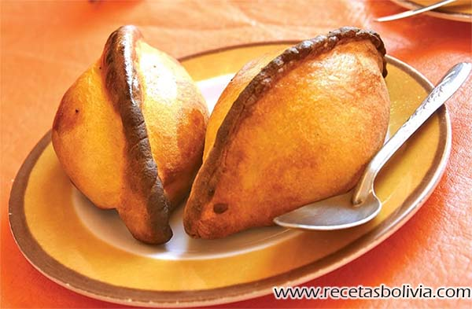

Salteñas (Chuquisaca)
Deliciosas empanadas horneadas con relleno jugoso.

Silpancho (Cochabamba)
Plato cochabambino con arroz, carne apanada, huevo y papas.

Majadito (Santa Cruz)
Arroz con charque acompañado de plátano frito.

Plato Paceño (La Paz)
Choclo, queso, habas, papa y carne asada.

Saice (Tarija)
Guiso de carne molida con arvejas y papas.

Charquekan (Oruro)
Charque seco con mote, huevo y queso.

Kalapurka (Potosí)
Sopa caliente con piedra volcánica, carne y maíz.

Fricase (Beni)
Guiso de cerdo con maíz blanco y ají amarillo.

Sudado de Surubí (Pando)
Pescado surubí cocinado en un caldo especiado.